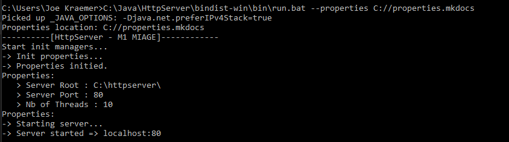
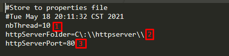
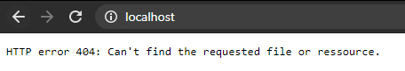
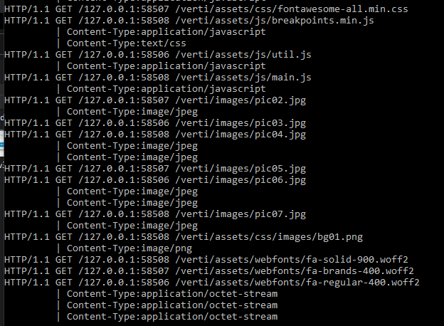
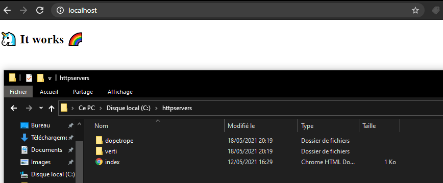
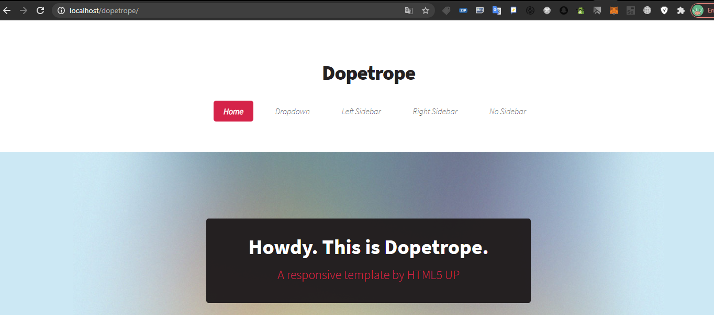
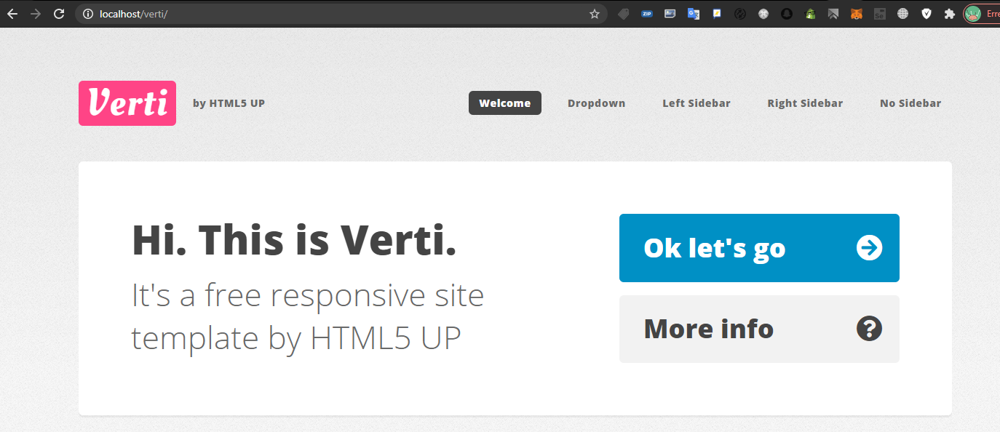

Guide d'utilisation
Aperçu
Lorsque le serveur est correctement lancé, vous devriez avoir des informations similaire dans votre console.

Fichier properties
Lorsque vous lancez le serveur pour la première fois, un fichier de propriété est créer à la location que vous avez définit dans votre argument --properties. Il est de base remplie avec ces informations:

Description des propriétés:
1 - Nombre de threads concurrents maximums
2 - Dossier dans lequel se trouve les fichiers de vos sites
3 - Port du serveur
Une fois le serveur éteins, vous pouvez alors éditer les propriétés et relancer le serveur avec le même paramètre pour l'endroit des propriétés.
Premier accès au localhost
Lors de votre premier accès, si vous n'avez mis aucun fichier dans le dossier de votre serveur web, vous devriez tombé sur une erreur 404.

Détail des requêtes
Lorsque vous accéder à un site, vous aurez dans la console le retour des requêtes.

Vous pourrez voir :
- Le protocol
- La méthode
- L'ip de la personne
- La ressource demandée
- Le type de contenu (type web) demandé
Remplir le dossier du serveur web
Prenons pour exemple les ressources fournies par le professeur pour ce projet. En retournant sur localhost:80 nous retrouverons ceci:
index.html

Nous pouvons également aller dans les deux autres dossiers :
Dopetrope

Verti
